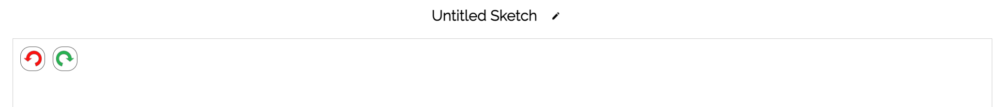
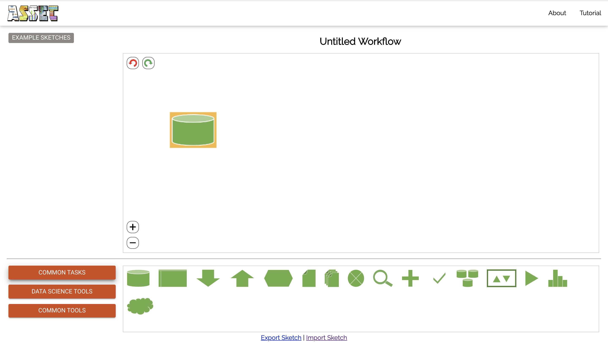
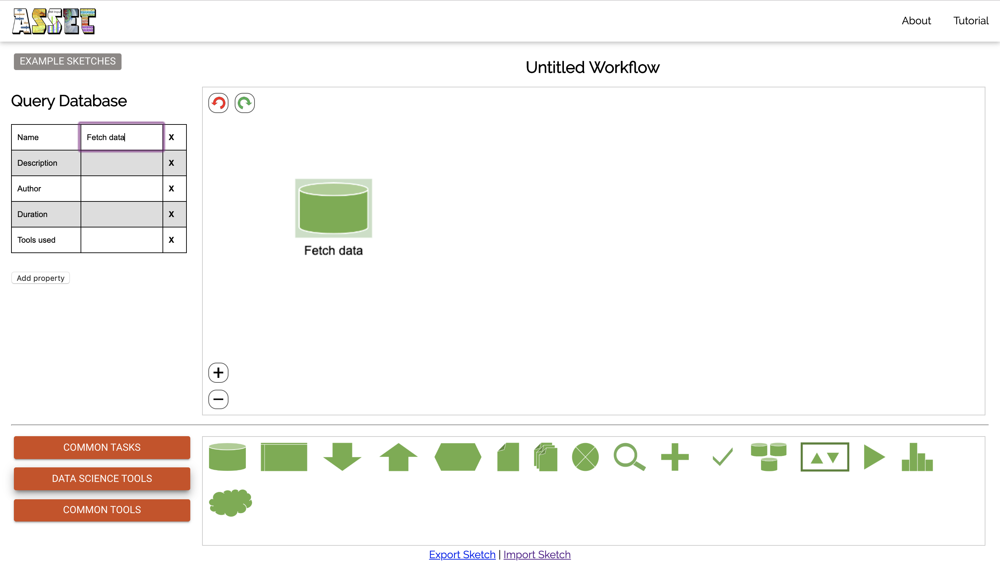
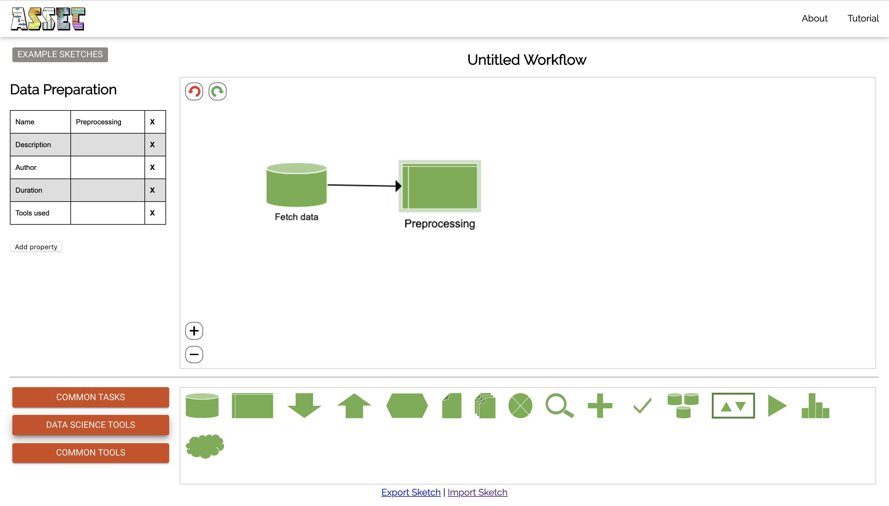
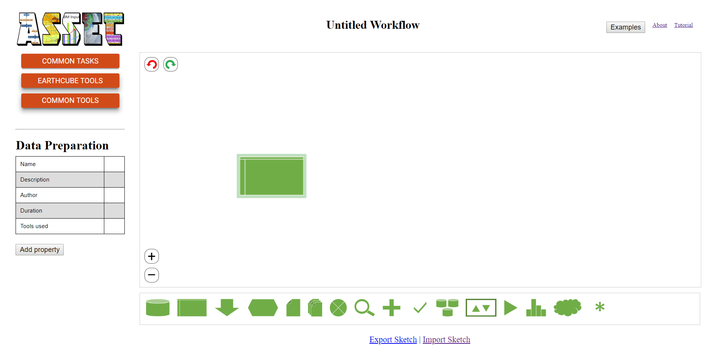
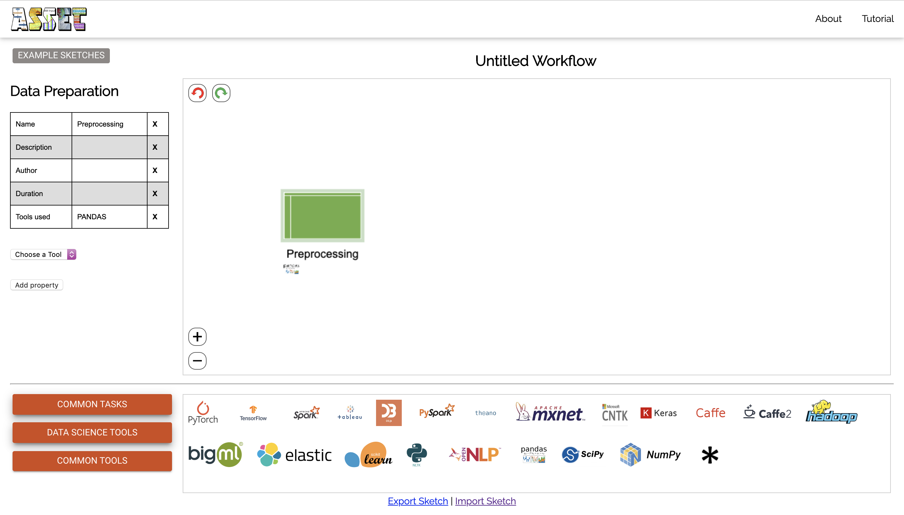

In order to rename your current sketch, you have to hover your mouse over the title and click:
The title will become editable and will be saved with the new text entered.
First, click on any of the buttons placed in the left of the screen (e.g., "Common Tasks"). This will trigger a list of tools to appear at the bottom of the screen.
Now just click the desired element and drag it to the canvas:
Click on the desired element and a table will appear on the left of the screen. Any of the properties of the table can be edited or deleted. By clicking on "Add property", a new row will be added in the table. The "Name" property will be displayed on the sketch.
Select an element (an arrow or a task in the canvas) and press the "delete" key on your keyboard.
First, add the two elements you which to connect in your canvas. Double click on one of the elements to turn it red.
Then click on the target element and an arrow will be drawn:
To show what tools you used in a certain step of your sketch, first create a sketch and add a step.
Next, drag your desired tool from the bottom to the target element in your sketch and drop it. The selected tool will be shown under the element and will expand when the element is hovered over. In the description table, "tools used" will be automatically updated.
Press on the "Export sketch" link on the lower part of the screen.